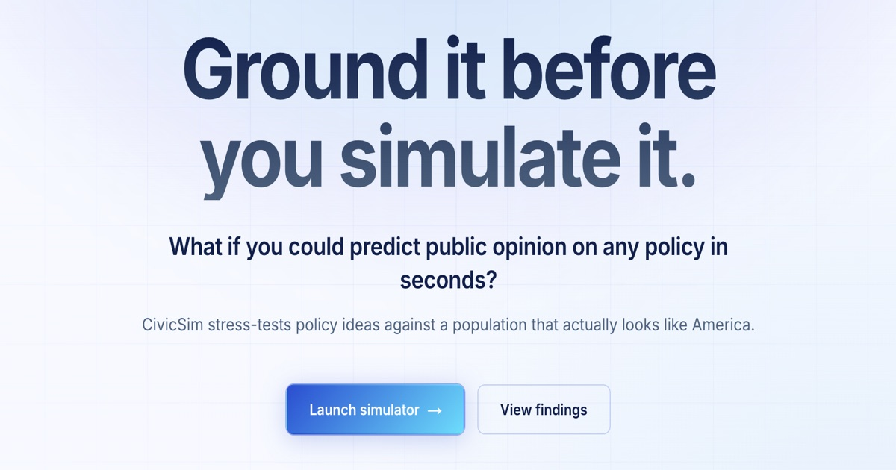

CivicSim
A synthetic U.S. electorate for stress-testing policy before it meets the public.

Agents are instantiated from American Community Survey microdata and conditioned on demographic-opinion distributions from the Pew American Trends Panel. The aim is a synthetic electorate whose opinions track the real U.S. adult population, one demographic cell at a time.
Experiments benchmark demographic alignment between the census and survey corpora, and test how well opinions transfer across geographies.
The thesis: realistic policy simulation needs grounding in real population data, not just model scale.